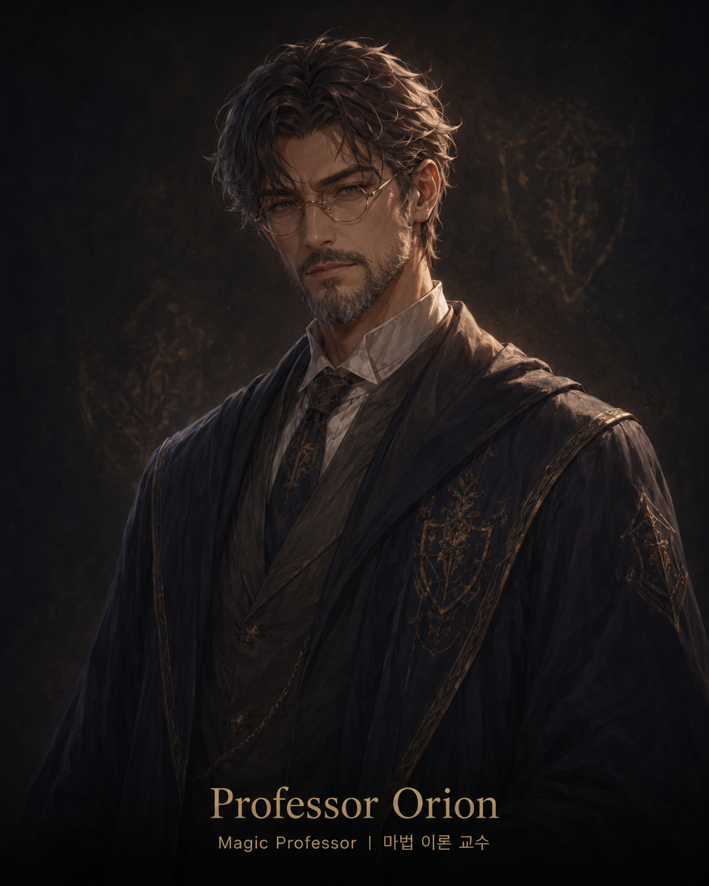

Adel긴장 82
Adel긴장 82A living story unfolds
스스로 이야기가 만들어지는
마법 아카데미
각자의 성격과 기억을 지닌 학생 다섯 명과 교수 한 명이 사건을 마주합니다. 인물들이 이동하고 대화하며 관계를 바꾸는 일곱 이야기 단계를 지켜보세요.
학생 5명 + 교수 1명서로 다른 성격·상태·기억
7개 이야기 단계선택이 쌓여 달라지는 관계
MAGIC ACADEMY · 지금의 캠퍼스이야기 단계 4 / 7
6명의 인물이 선택하고 있습니다
새로운 사건금지 구역의 마력 이상같은 사건을 마주한 여섯 인물은 서로 다른 선택을 시작합니다.
Adel긴장 82 Leo호기심 91
Leo호기심 91 Ria공감 88
Ria공감 88 Kai의욕 90
Kai의욕 90 Sera신뢰 74
Sera신뢰 74
Prof. Orion관찰 중5 + 1학생 5명 · 교수 1명
7이어지는 이야기 단계
6서로를 향한 관계 변화
같은 시작점조건에 따라 달라지는 이야기
A living campus
지켜보는 동안,
캠퍼스는 스스로 움직입니다.
직접 조종하지 않아도 여섯 인물은 각자의 성격과 기억에 따라 장소를 옮기고, 대화하고, 관계를 만듭니다. 네 장소와 일곱 이야기 단계를 직접 탐색해 보세요.
별빛 광장달빛 도서관별자리 교실마력 연구실이야기 단계 × 7
살아 움직이는 캠퍼스 탐색하기 Meet the characters
여섯 인물은 저마다 다르게
보고, 기억하고, 선택합니다.
다섯 학생과 한 명의 교수는 각자의 성격과 상태, 일정, 위치, 관계, 기억을 바탕으로 이야기 단계마다 하나의 주요 행동을 선택합니다.
AdelISTJ · 원칙LeoESTP · 경험RiaINFP · 공감KaiENTJ · 성취SeraESFJ · 조화Choices shape relationships
한 사건이 선택을 만들고,
선택은 관계를 바꿉니다.
이야기는 미리 정해진 줄거리를 따라가지 않습니다. 같은 일을 겪어도 인물마다 다른 기억과 관계가 다음 선택으로 이어집니다.
01
사건을 마주합니다
수업과 일상부터 예기치 못한 마법 사건까지, 캠퍼스의 변화가 모든 인물에게 새로운 상황을 만듭니다.
- 캠퍼스의 장소와 일정
- 일반 사건과 마법 사건
- 인물마다 다른 현재 상태
02
각자의 선택을 합니다
성격과 기억이 다른 인물들은 같은 사건 앞에서도 다르게 이동하고 대화하며 행동합니다.
- 서로 다른 성격
- 지금까지 쌓인 기억
- 상황에 따른 행동
03
관계가 달라집니다
도움과 갈등, 대화와 거리 두기가 쌓이며 신뢰와 긴장 같은 관계가 다음 이야기에 영향을 줍니다.
- 선택 뒤의 관계 변화
- 이어지는 대화와 기억
- 다음 이야기 단계의 단서
See another story
이야기 조건 하나가
어떤 변화를 만들까요?
같은 시작점에서 이야기 조건 하나만 바꾸면 인물과 관계가 어떻게 달라지는지 나란히 볼 수 있습니다. 일반 사건은 진행 중에도 바꿀 수 있으며 다음 이야기 단계부터 적용됩니다. 마법 사용 여부는 이야기를 시작하기 전에만 설정할 수 있습니다.
같은 시작점
academy-042유지일반 사건
빈도 · 영향진행 중 변경 가능마법 사용 여부
사용 · 사용 안 함시작 전에만 설정다시 보기
저장된 이야기그대로 재생이야기 A · 마법 사용 안 함낮은 사건 빈도
이야기 B · 마법 사용높은 사건 빈도
평온한 캠퍼스
- 신뢰 +12 · 긴장 −4
- 친구 관계 2쌍 형성
- 주요 사건 1건
마법 사건이 일어난 캠퍼스
- 긴장 +18 · 경쟁 +9
- 라이벌 관계 형성
- 학생 한 명이 자리를 비움
Clues behind each choice
왜 그런 선택을 했을까요?
선택의 단서를 따라가 보세요.
Adel · 이야기 단계 4선택의 단서
선택한 행동도서관 결계 구역을 이탈한다
현재 상태긴장 92
현재 상태피로 85
관계갈등 +18
기억규칙 문제로 언쟁
선택 뒤의 변화2단계 동안 자리를 비움
인물이 선택할 당시의 상태와 관계, 기억, 마주한 사건을 한곳에서 확인할 수 있습니다. 마음속 생각을 정답처럼 보여주는 대신, 실제 선택에 함께 쓰인 기록을 제공합니다.
결과만 보는 데서 그치지 않고, 이야기가 갈라진 순간을 다시 이해할 수 있습니다.
선택의 단서 보기Watch it again
일곱 단계의 이야기를
처음부터 다시 볼 수 있습니다.
저장된 이야기 다시 보기
학생 다섯 명과 교수 한 명이 같은 캠퍼스에서 내린 선택을 이야기 단계별로 저장합니다. 다시 보기에서는 새 이야기를 만들지 않고, 그때 일어난 장면과 선택의 단서를 그대로 확인합니다.
학생 × 5교수 × 1이야기 단계 × 7같은 시작점 저장
1단계
2단계
3단계
4단계
5단계
6단계
7단계
A story you can revisit
이야기가 달라진 순간을
빠짐없이 남깁니다.
각 단계의 시작 모습과 적용된 규칙, 변화 이력을 함께 기록해 같은 이야기를 다시 확인할 수 있도록 설계했습니다.
같은 장면동일 시점에서 선택
모든 인물이 같은 시점의 캠퍼스 모습을 기준으로 선택합니다.
안전한 진행한 인물의 오류를 분리
일부 선택을 만들지 못해도 다른 인물의 이야기 단계는 이어집니다.
규칙 기록적용된 기준 확인
이야기에 어떤 규칙이 적용됐는지 버전과 함께 남깁니다.
다시 보기저장된 결과 그대로
새 선택을 만들지 않고 저장된 이야기 단계를 그대로 재생합니다.
How it works
자유로운 이야기와 일관된 변화는
서로 다른 과정이 맡습니다.
언어 모델은 인물다운 행동 후보와 장면을 만들고, 정해진 규칙은 상태와 관계의 변화가 일관되도록 계산합니다.
01현재 캠퍼스 모습
→
02일반 사건 · 마법 사건
→
03여섯 인물의 선택
→
04변화 확인 · 저장
언어 모델이 성격과 상황에 어울리는 행동 후보와 장면을 만듭니다.
정해진 규칙이 상태와 관계의 변화량과 지속 시간을 계산합니다.
겹치는 변화를 정리한 뒤 이야기 단계의 결과를 한 번에 저장합니다.